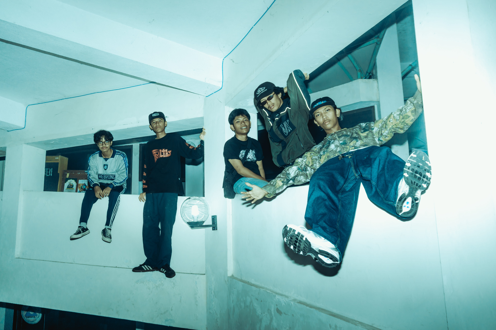
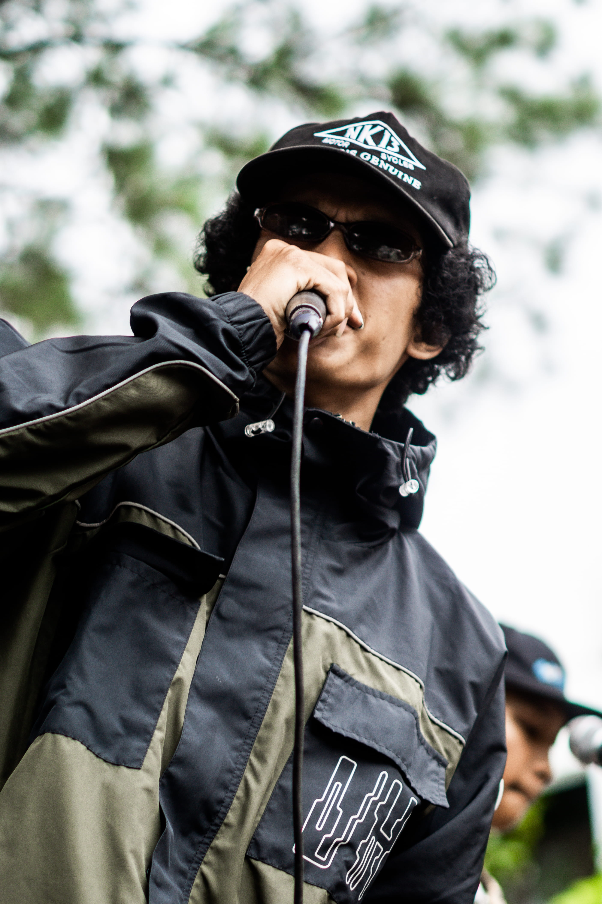
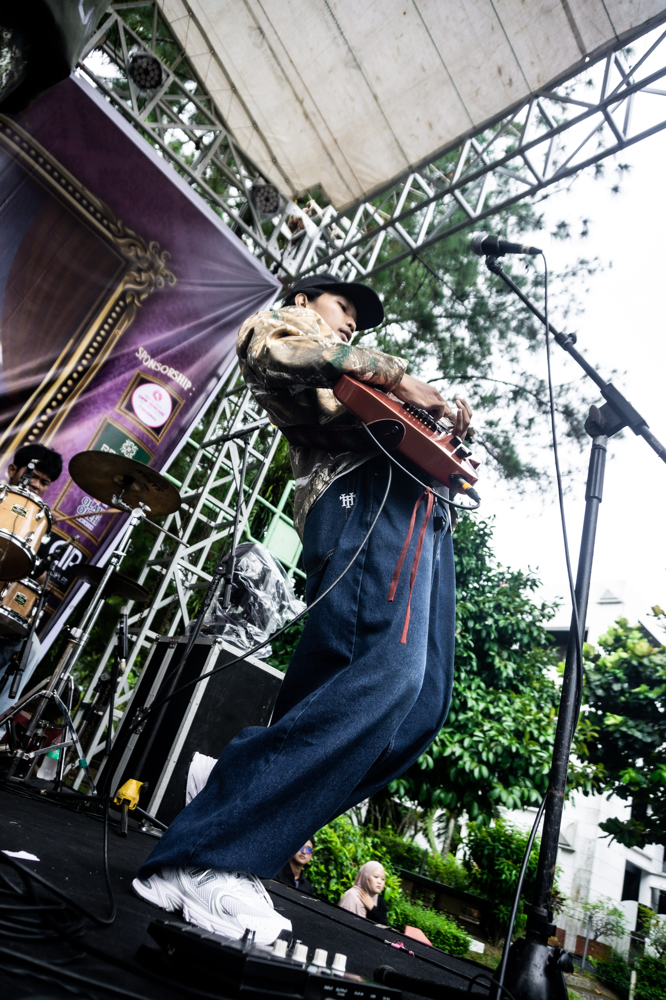
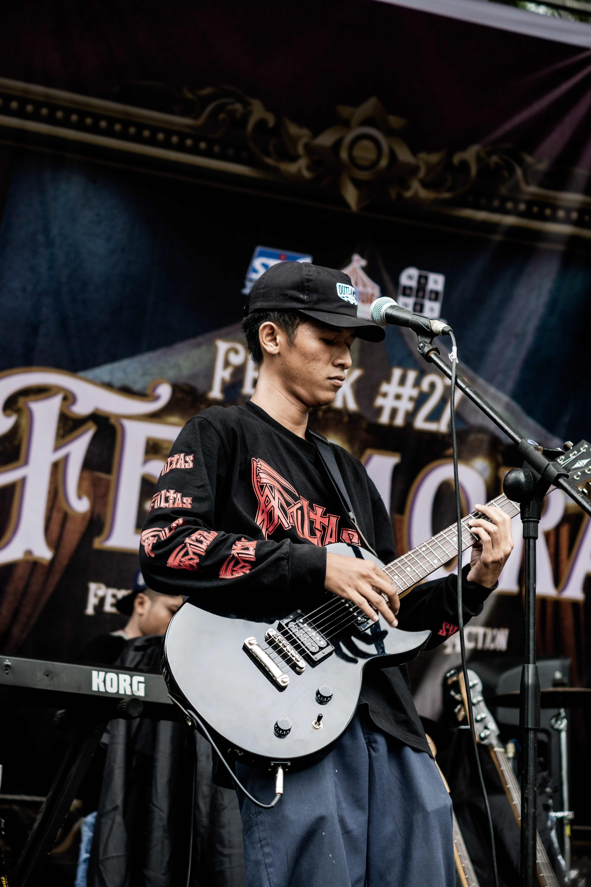
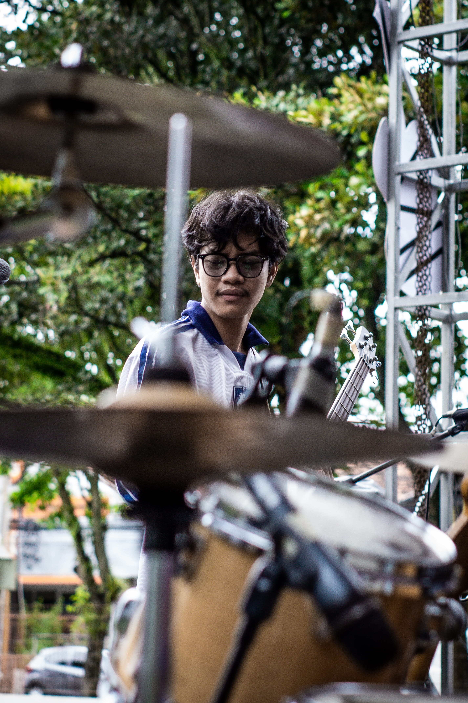
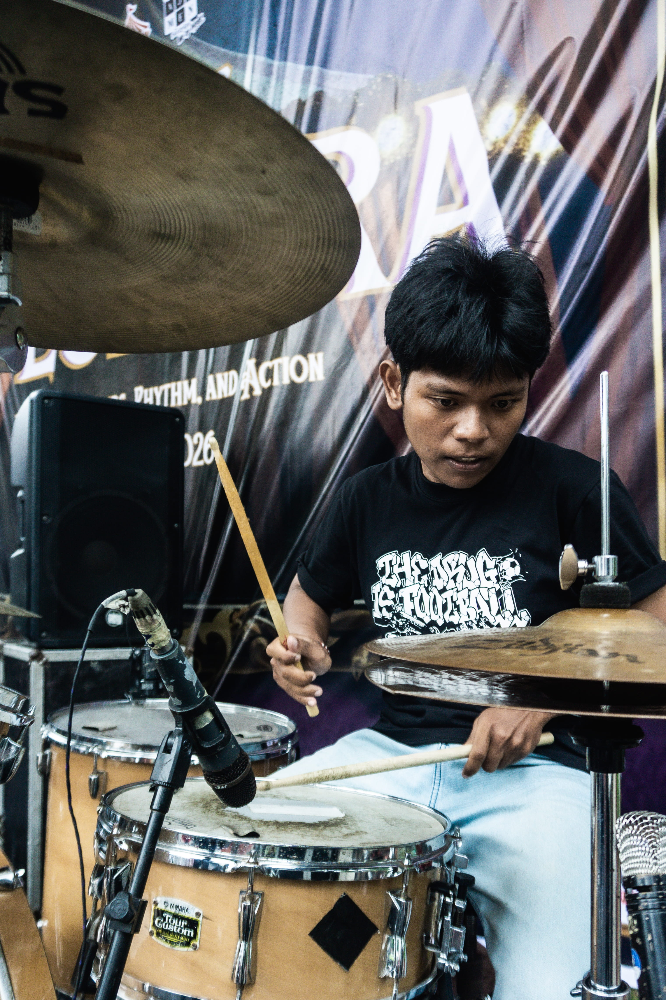

AWAL MULA
Di sudut kota Yogyakarta, lahirlah sebuah band dari ruang kelas seni budaya di SMA Negeri 10 Yogyakarta. Awalnya hanya sebuah tugas praktik—tanpa ambisi besar, tanpa mimpi panggung megah. Mereka menamai diri mereka The Mok, nama yang terdengar aneh, tapi penuh energi mentah.
Formasi awal diisi oleh Khafka Arsya sebagai vokalis, Ctvertlik Kal El Lucky sebagai gitaris lead, Muhammad Fachri sebagai gitaris rhythm, Dimas Adiegar pada bass, dan Aravena Afriza di drum. Mereka bukan band yang langsung jadi—sering tidak kompak, sering kacau, tapi justru dari kekacauan itu lahir sesuatu yang jujur.
Kesempatan tampil di Taman Budaya Yogyakarta menjadi titik balik. Di bawah lampu sederhana, mereka tidak hanya bermain musik mereka melampiaskan jiwa. Malam itu mengubah segalanya.
Seiring waktu, Aravena berpindah dari drum ke bass. Posisi drum diisi oleh Naufal Pralista yang awalnya hanya additional. Namun akhirnya menjadi bagian resmi. Perubahan ini bukan sekadar pergantian posisi, tapi awal dari identitas baru.
The Mok pun berevolusi menjadi REKONSTRUKSI JOURNEY sebuah nama yang bukan hanya identitas tapi makna. Mereka adalah perjalanan. Mereka adalah perubahan. Mereka adalah proses yang tidak pernah selesai.
Dari ruang kelas kecil hingga panggung, mereka terus berjalan. Jatuh, bangkit, dan terus merekonstruksi diri mereka dalam setiap nada yang dimainkan.

Rekonstruksi Journey adalah band yang lahir dari tugas praktik seni budaya di SMA Negeri 10 Yogyakarta. Berawal dari nama The Mok mereka berkembang menjadi perjalanan musik yang penuh makna.

Khafka

Kal El

Fachri

Aravena
